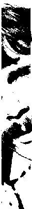

Librarian,
San Rafael Public Library
.
Books:
The Complete Annotated Grateful Dead Lyrics
. Free Press, 2005.
Co-editor of
The Grateful Dead Reader
, with Diana Spaulding. Oxford University Press, 2000.
Co-author of
The Grateful Dead and the Deadheads: an Annotated Bibliography
, with Robert G. Weiner. Greenwood Press, 1997.
Resume
World Wide Web publications:
Unitarian Universalists of Petaluma
(webmaster)
K12searches.org
(co-author with Diana Spaulding)
The
Annotated
Grateful Dead Lyrics
Arno Holz's
Phantasus
H.D. Moe: A Bibliography
Richard Powers: A Bibliography
Interests: Libraries | Freedom | Religion | Music
Photo by Eugene Grealish (1977).